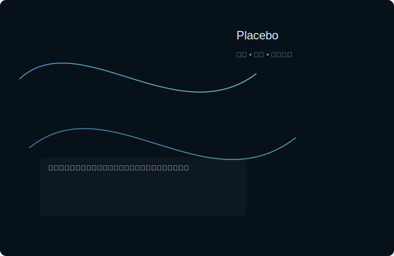

什么是安慰剂效应？
安慰剂效应是一种当个体对治疗抱有积极预期时，即便所接受的是无药效的“假处理”，也可能在症状上获得缓解或改善的现象。该效应在疼痛管理、抑郁症、帕金森等领域的研究中有广泛观察。
经典临床试验
在双盲随机对照试验中，对照组服用安慰剂时也出现改善，提示心理与期待对结果有显著影响。
神经学证据
研究通过脑成像发现，安慰剂能够激活与奖励和疼痛调节相关的大脑回路。
现实意义与伦理
理解安慰剂效应有助于医学实践中的沟通策略，但在临床应用中需注意知情同意与伦理边界。
参考与延伸阅读
- Beecher HK. The powerful placebo. JAMA, 1955.
- Colloca L, Benedetti F. The placebo effect: from the neurobiological paradigm to clinical practice. Nat Rev Neurosci.